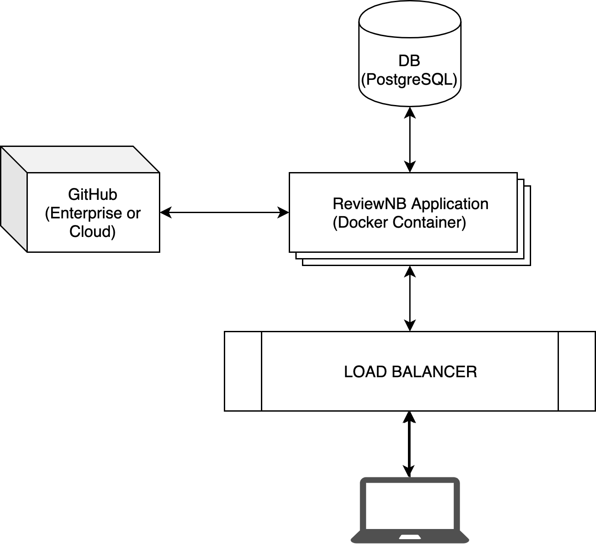

Overview¶
This is an architectural overview of ReviewNB’s self hosted offering. The application is distributed as a docker image via Quay. Application communicates with your GitHub repositories & offers a code review workflow for Jupyter notebooks on GitHub.
There are 3 main components - PostgreSQL DB, ReviewNB Application & GitHub App. Details of each are present below. In a self hosted setup you create & fully control all three components. Here’s a step-by-step installation guide if you want to dig into the details.
PostgreSQL DB¶
The DB stores user identity, repository metadata and notebook comments. More specifically it contains,
User’s GitHub information (GitHub id, email, handle, avatar URL etc.)
AES encrypted GitHub access token. Refreshed at each logout -> login.
Audit log of the User
Comments made on notebooks (JDoc comments)
Repository metadata such as repository name, file name, pull request number, commit id etc.
Please note,
The actual repository contents (files, diffs) are NOT stored in ReviewNB but fetched from GitHub on-demand
Pull Request comments are NOT stored in ReviewNB, they’re directly posted to GitHub PR
ReviewNB Application¶
This is a web application that you run on your own servers. We distribute this as a docker image via Quay. It communicates with GitHub APIs to fetch relevant data & to post comments on pull requests.
GitHub App¶
This is a GitHub App that you create and configure on GitHub cloud or on your own GitHub Enterprise instance. This represents the ReviewNB app on GitHub. It lets you configure which repositories the app will have access to, what kind of permission it has & so on. See Create GitHub App for more details.
FAQ¶
- Does ReviewNB work with GitHub Enterprise?
Yes. Our self hosted installation works with GitHub Enterprise & GitHub.com both.
- How long does it take to setup a self hosted ReviewNB instance?
It takes about ~2 hours to set everything up.
- How much effort is required for maintenance?
There’s no maintenance required of you apart from periodic updates.
We notify you when an update is available. Update process shouldn’t take more than a few minutes (you simply pull docker image with the new tag)
- Does the application makes any call back to “home”?
No. The application does not make any calls back to ReviewNB infrastructure. Even the licensing information is pre-baked into your docker image.
- How secure is self hosted ReviewNB?
Most important thing for us & all our self hosted customers is security & privacy of their data/notebooks. With that in mind, here’s our security design overview -
The application does not make any calls back to ReviewNB infrastructure. All the data is stored securely under your own control.
You can (and should) restrict the outbound access of ReviewNB service only to Github.com & your own SMTP server (except for fetching data from GitHub & sending emails to users, the application does not need to talk to outside world)
You can (and should) restrict the inbound access to your own corporate VPN. Nobody outside your company network can access the ReviewNB application.
You can (and should) only allow inbound access to PostgresDB from ReviewNB application.
GitHub API key for the user is stored in DB with AES encryption.
Every time a user logs out and logs back in we create a new GitHub API key (as part of the GitHub OAuth login flow), effectively making the old keys defunct.
Our app has been verified by GitHub team & approved for sell on GitHub marketplace. You can see Verified by GitHub badge on our marketplace listing.
Our self hosted offering has been reviewed, approved & currently being used by organizations such as AirBnB, Lyft, Deloitte, Royal Bank of Canada, NASA JPL & many more.